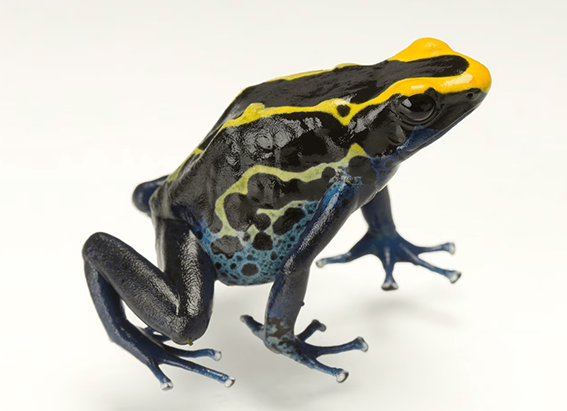
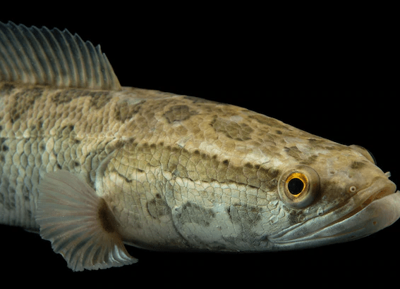

NATIONAL GEOGRAPHIC
Walking is the sixth vital sign. Here’s how to do it right.
SCIENCE
Walking might seem simple. But it’s not, explains epidemiologist Peggy Cawthon, science director of the California Pacific Medical Center Research Institute. It’s an amazingly complex behavior that continues to baffle researchers, especially ones trying to understand how to improve our lives as we age.
“For reasons we don’t understand, the speed you walk is related to your risk of dying,” she says. Folks who can keep up the pace are likely to stick around longer.
And they’re likely to live better. Lack of mobility is one of the top reasons that seniors lose independence, according to the National Institute on Aging, and it’s also closely linked to cognitive decline.
Over the past decade, gait speed has emerged as the sixth vital sign, since it can predict a huge range of health problems. “Walking involves every system of the body,” adds Jessie VanSwearingen, professor of physical therapy at the University of Pittsburgh. Even if doctors haven’t noticed anything amiss, changes in someone’s walking could be a tipoff that a diagnosis isn’t far behind.
According to the National Institutes of Health, there are four types of exercises we should all be getting to help us stay active: endurance, strength, balance, and flexibility. That’s just the start of the equation. “I’m in the camp that exercise is important, but it’s not the elixir that solves all problems. No one thing will save you,” Cawthon says.
There’s also a lot left to learn about how the brain influences it all, notes On-Yee (Amy) Lo, of the Hebrew SeniorLife Marcus Institute for Aging Research and an Assistant Professor at Harvard Medical School and Beth Israel Deaconess Medical Center. She has seen plenty of patients with perfectly functioning muscles. “But when you tell them to move, they can’t,” she says.
So what, um, steps should we take to protect our mobility—especially as we get farther away from those toddler years? Here are a few ideas:
Don’t stop moving
Experts agree that pretty much the worst thing a person can do is to stop moving. You’ll feel the effects almost immediately, says Pete McCall, director of education for EōS Fitness and author of Smarter Recovery: A Practical Guide to Maximizing Training Results. Sitting for hours leaves him sore, and it’s the days when he uses his hands that his arthritis doesn’t bother him as much. These are helpful reminders that our bodies demand action.
“But I don’t need to crush myself at every workout,” says McCall, who shared his quick go-to routine for limbering up his spine, hips, and ankles on the American Council on Exercise website. “It’s almost like brushing my teeth. If I don’t do it for a day or two, I notice,” he says. He uses the moves which include hip circles and getting down on one knee, and then reaching with the opposite arm to twist the upper body before or after a workout, or as an active recovery day.
If that sounds too complicated, McCall’s suggestion is to follow the advice he gives his 80-year-old dad. “I yell at him to walk and do yoga,” he says, noting that poses such as cat-cow and the warrior series force you to pay attention to your spine.
Even if you’re injured, try to find something active that works for you, like swimming or biking. “The magic is whatever exercise people can do,” Lo says. In her case, as a working mom of a four-year-old, that’s usually chasing her kid around.
Curious about pickleball? Or taking up ballroom dancing? Don’t be afraid of learning new skills, says Jennifer Brach, professor of physical therapy at the University of Pittsburgh. “Find the program you enjoy, so you stick with it.”
Comments :
- john Very good
- john Very good
Leave a Reply
Your email address will not be published. Required fields are marked*
Related posts:
-
Dyeing poison frog
One of the most recognizable frogs in the world, the dyeing poison frog is a species of poison frog. It’s known for its vibrantly colored skin yellow on its back and blue on its legs and its size. It can grow up to two inches long
View article -
Northern snakehead
The northern snakehead (Channa argus) has a most unusual ability: It can breathe outside of the water, as well as within. Juveniles can also wriggle their long, narrow bodies onto land, enabling them to travel from one pond
View article -
 Flatfishes
FlatfishesNo misnomers here. Flatfish are exactly what they sound like: fish with thin, oval or diamond-shaped bodies that are lie flat on the seafloor.
View article